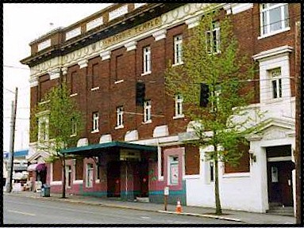
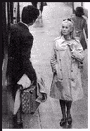

Contents | Features | Reviews | News | Archives | Store

Contents | Features | Reviews | News | Archives | Store
 |
22nd Seattle
International |
The first impression to be had from Seattle, once you stop staring in amazement at the mountain ranges that flank it on both sides (the Olympic to the west and the Cascade to the east) is the architectural diversity of the neighborhoods. Whether due to the various economic oscillations that have buffeted Seattle over the past century, the presence of a strong artistic community, or the make-do mentality that such intersections tend to inspire, every area of the city has an impromptu feeling about it.
The boutiques of young clothing designers and their coffee shops have sprung up all over the city, often in stand-alone buildings which are the only game on their block. The effect is not unlike an economic form of what Levi-Strauss defined as bricolage, or, the art of spontaneous creation from found objects. These businesses have almost single-handedly transformed previously undesirable locations like Belltown into areas that are de rigeur for the socially informed and the wannabes, along with the rising rents that will, sadly but eventually, push the pioneers out.
The concept of creating from what has been found also applies to the Seattle film community. Leave the glittering skyscrapers that have altered the downtown landscape so very recently, with their multiplex Odeons, and head east, young man or woman, to climb several cliffs that masquerade as hills on Pike Street. While passing the intersection of Boren and Pike, mourn the passing of the ultimate in bricolage cinema, the Pike Street Cinema (with seats that afforded the lumbar support of slate tiles, but which offered a most unique repertoire of films, from old television commercials to Bugs Bunny classics that could no longer pass the requirements of political correctness).
After the wake, and a refueling at various latte shops along the journey, you will soon find yourself in the environs of Capitol Hill. Not to be confused with that other place in that other Washington, this Capitol Hill is a place where much more interesting things usually happen and usually get done.  For one thing, it is no exaggeration to say that Cap Hill is open all night; the streets are lined with funky boutiques, body piercing shops and at least three of the best dessert shops in the city (much to my eternal guilt). On the edge of Cap Hill, at 801 East Pine Street, is a Masonic Temple (pictured) that has been converted into another form of temple known most of the year as the Egyptian Theatre (another of the festival sites, the Harvard Exit, also started out in another guise, as the theatre for a women's club). Between the middle of May and June each year, the Egyptian manifests another side to its personality, as it is the home base for the Seattle International Film Festival (SIFF).
Founded in 1975 by Darryl McDonald and Dan Ireland, SIFF has the honor of being the most highly attended film festival in the United States (selling more than 100,000 tickets to over 270 films during its 25 day run). SIFF actually violates international standards setting the maximum length of a festival at seventeen days, so for years it was denied official recognition.
Aside from its size and its duration, SIFF is unique in another respect: it is a people's festival. Although many industry figures consider SIFF to be a necessary drop-in venue, the festival is driven purely by the love of cinema. Designer clothes, and the attitudes that tend to accompany them, are in sparse supply here; T-shirts, shorts and Tevas/Birkenstocks prevail. After all, comfort is an important consideration when the outside wait in line is approximately one hour or longer, in any number of weather conditions (Seattle is notorious for days that begin with sun and end with rain, vice versa, or just begin and end with rain) and the internal temperature of the Egyptian Theatre reaches its maximum after the first nightly screening, with two more screenings at full capacity to go (however, this rather sweaty situation might be a thing of the past, since air conditioning was reportedly installed last week).
The film selections themselves are exemplary, as one might expect from an organization whose mission statement promises "to provide unique opportunities for the advancement and recognition of cinema as an art form". The battle on this front may have been won long ago, but Darryl and his staff continue to program the festival as if cinema had something to prove, which is another way of saying that their hunger for locating the best, the revered, the unique and the downright perverse has never abated. Each year, the showcases never fail to amaze with their breadth and depth of material. A special focus at SIFF this year is a series devoted to the films of Great Britain, including Danny Boyle's Trainspotting and a series called Best of the British Shorts, among them Hello, Hello, Hello by David Thewlis.
 The somewhat egalitarian approach to selecting and showcasing films, combined
with Seattle's reputation as a film town of no little discrimination, and Darryl's
tremendous contacts within the industry, has resulted in some considerable coups for SIFF.
Last year's gala film Braveheart also had its North American première in
Seattle. Gus Van Sant's To Die For came straight
from Cannes to have its second screening at SIFF, months before its U.S. debut. Continuing
in this tradition, one of two films that will close the festival this year, Robert
Altman's Kansas City, is also coming
straight from Cannes. Among those films having their World and/or U.S. Premières at
Seattle include John Turteltaub's Phenomenon starring
John Travolta, All Things Fair directed by Bo Wiederberg, Danny Boyle's Trainspotting
and Gilles Mackinnon's Small Faces.
The somewhat egalitarian approach to selecting and showcasing films, combined
with Seattle's reputation as a film town of no little discrimination, and Darryl's
tremendous contacts within the industry, has resulted in some considerable coups for SIFF.
Last year's gala film Braveheart also had its North American première in
Seattle. Gus Van Sant's To Die For came straight
from Cannes to have its second screening at SIFF, months before its U.S. debut. Continuing
in this tradition, one of two films that will close the festival this year, Robert
Altman's Kansas City, is also coming
straight from Cannes. Among those films having their World and/or U.S. Premières at
Seattle include John Turteltaub's Phenomenon starring
John Travolta, All Things Fair directed by Bo Wiederberg, Danny Boyle's Trainspotting
and Gilles Mackinnon's Small Faces.
Another première more near and dear to the heart of SIFF is the return of Festival co-founder Dan Ireland. His debut film, The Whole Wide World, opened the Festival on May 16th. After a career producing other people's films (among them John Huston's final film, The Dead), Ireland has taken the opportunity to demonstrate his own story-telling skills in this charming slice-of-life story. World is based upon the memoirs of schoolteacher Novalyne Price Ellis who provides an account of her intense relationship with Robert E. Howard (better known as the creator of Conan the Barbarian) in the wilds of 1930s Texas. Not what you'd expect, this bittersweet relationship is a meeting of like minds, not of bodies, but Ireland's film, despite some passages that are slightly too prolonged, is always compelling.
Other special features this year include an expanded archival section in tribute to the late film scholar and archivist William K. Everson, who died in mid-April. Among the rarely-seen treasures to emerge from cinema's past will be Wanda Jakubonska's The Last Stop, a masterful evocation of the lives of female inmates in Auschwitz-Birkenau, filmed on location in 1947, and featuring many who survived the atrocities committed there. A new print of Dziga Vertov's silent masterpiece, The Man With a Movie Camera features a musical score, one which was composed by Vertov and recently rediscovered after having been thought lost for decades. And, of course, the series would not be complete without a screening of Jacques Demy's nearly-lost and newly-restored 1964 musical, The Umbrellas of Cherbourg, featuring a twenty-year-old Catherine Deneuve in her film debut.
As usual, SIFF also offers up its infamous Secret Festival, a smorgasbord consisting of films fresh from the lab, relatively unknown classics and the occasional film whose legal troubles have prevented it from getting a fair and recent hearing. Unfortunately, there's not much more to tell, since everyone with a SF pass must sign an oath of secrecy (Not even the members of the fifth estate are given that information; at the opening press conference Darryl intimated, only half-jokingly, that he could tell us what was on the SF program, but then he would have to kill us). The SF is usually the first program to sell out within the first day of sales to the general public, and this year was no exception.
Industry figures who are expected to attend this year's festival include Robert Altman, Danny Boyle, Jim Jarmusch, screenwriter Randall Wallace (fresh from Braveheart), Todd Solondz (complete with his acclaimed film from Sundance, Welcome to the Dollhouse), and Mary Harron (yet another Sundance honoree with I Shot Andy Warhol). In addition, an entire weekend will be dedicated to the Filmmakers' Forum, a series of panel sessions on the nuts and bolts and dollars and cents and fine print of filmmaking. You might call it a dose of reality in the midst of fantasy.
Well, here's to twenty-five days of continuous and unabashed film going, bad meals eaten on the run and too many late-night screenings, all of which culminate in the annual Film Festival Cold. I wouldn't miss it for anything.
Contents | Features | Reviews | News | Archives | Store
Copyright © 1999 by Nitrate Productions, Inc. All Rights Reserved.